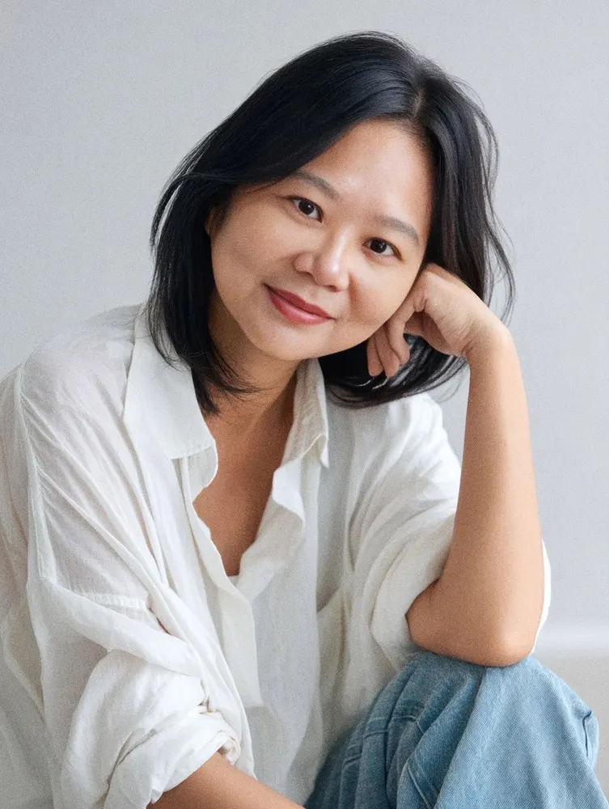
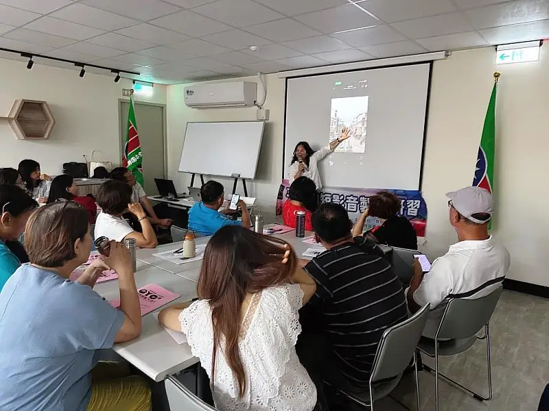
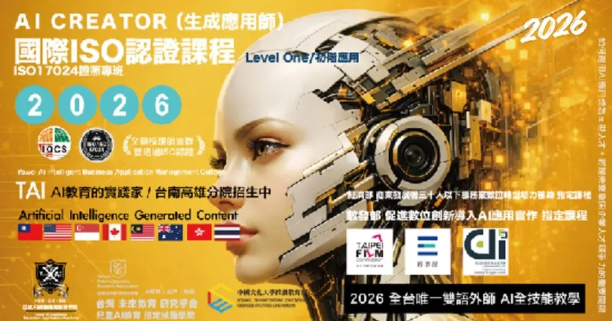

AI 創新應用與 AIGC 課程
手機 AI 短影音、Gemini 生圖、KaiPai 開拍全流程、AI 影音製作趨勢。2026 年 6 月受邀至屏東救國團主講手機 AI 短影音研習，現場教素人用 AI 拍片。
代表課程企業內訓從茶席到雲端
博士論文寫茶文化，著作寫元宇宙茶文化與生成式 AI——她把一盞茶的慢，翻譯成企業聽得懂的 AI 語言。

重點數字
世新傳播博士畢業
世新大學官方畢業生名單
《AI世代閱聽傳播》著作章節
第 7 章生成式 AI 應用・第 10 章元宇宙茶文化
亞威 AI 學院擴展版圖
商傳媒 2026-05-30
AI 課程・企業顧問・數位媒體運營
教練提供之服務項目
學經歷
她的博士論文研究台灣茶文化的再製與形塑；四年後，她站在亞威 AI 學院的講台上，教企業用生成式 AI 做生意。茶與 AI，在她身上是同一條路。
學歷說明：作者簡介原文為「世新大學傳播博士學位學程」，博士學位取得年份與論文題目已由世新大學官方畢業生流向頁確認為 2022 年 1 月。職稱說明：商傳媒稱「南區分院長」，學院頁稱「南部分院主任／院長」，教練提供為「台南分院負責人」。
專長
她的工作是翻譯：把 AI 技術翻譯成企業的營收語言，把茶文化的慢翻譯成現代人的定靜功夫。
手機 AI 短影音、Gemini 生圖、KaiPai 開拍全流程、AI 影音製作趨勢。2026 年 6 月受邀至屏東救國團主講手機 AI 短影音研習，現場教素人用 AI 拍片。
代表課程企業內訓
為企業做 AI 導入診斷，從流程盤點到工具落地，陪老闆把 AI 變成日常。
台灣正念茶師創始人，慢．茶空間茶主人。博士論文研究的就是台灣茶文化的再製與形塑。

以 AI 生成音樂參賽，2025 年 Sukkot 國際住棚文化音樂節 AI 音樂創作佳作。
AI 行銷、直播、短影音與網站平台行銷設計，橫跨台南與福州兩地實務。
點一點圖上的三個亮點：同一盞茶裡，裝著她的博士論文、她的 AI 課程，和她的元宇宙茶文化。
生活事蹟
2022 年 1 月
世新大學傳播博士畢業，論文《台灣的茶文化再製形塑論證研究》，指導教授蔡念中；當時任職福建理工大學人文學院講師。
2022 年
字節跳動福州經銷商番米科技直播人才培訓；榕台交流人才驛站互聯網營銷人才庫台灣人才培訓。
2023 年
福州首邑文化旅遊投資公司閩侯旗山湖分公司數位媒體運營；取得大陸高等學校教師資格證。
12 月，以記者身分在台北報導 gd shop 品牌（nvns.net）。
2024 年
台灣派博國際文創數位媒體運營；台灣老子恆道文教學會顧問；取得福建省高級互聯網營運師、大疆無人機證照、中國高級心理諮詢師。
2025 年
Sukkot 國際住棚文化音樂節 AI 音樂創作佳作；立馬集團 AI 企業內訓；數位經濟國際「AI 行銷＋直播」深度培訓；取得 ISO/IEC 17024 AI 講師與提示工程師、AWS 生成式 AI 商業技能認證、Google Gemini 認證教育者。
2026 年
取得 ITS 人工智慧專業認證；5 月以亞威南區分院長身分接受商傳媒專訪；6 月 7 日在屏東救國團主講手機 AI 短影音研習（中央社）；9 月 1 日《AI世代閱聽傳播》出版。

「AI 教育已不再只是科技產業的事，而是全民都需要具備的基本能力。」—— 劉惠華博士，商傳媒 2026-05-30 亞威 AI 學院專訪
媒體牆
精選｜商傳媒 2026-05-30
「AI 教育已不再只是科技產業的事，而是全民都需要具備的基本能力。」
報導原文圖片因來源站點防盜連無法取用，本則以文字卡呈現。
閱讀原文 →

縮圖說明：中央社、亞威學院頁使用原文主圖；博客來、讀冊使用書封；誠品與 nvns.net 兩則原文主圖無法取用（誠品未提供、nvns 無 og:image），以文字卡呈現。
照片牆
公開管道只找到一張本人肖像（亞威學院頁團隊介紹）與一張書封。FB、IG 疑似帳號皆已鎖定、無法驗證；其他亞威團隊成員的照片不能拿來充數。